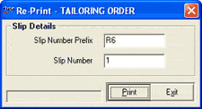

Service Order generated earlier can be reprinted using this option. The reprinting of a Service Order is required, if it is lost or damaged while printing earlier.
The Re-Print - TAILORING ORDER window is as shown.

Slip Details
Slip Number Prefix: Enter the prefix of the Service Order to be reprinted.
Slip Number: Enter the document number of the Service Order to be reprinted.